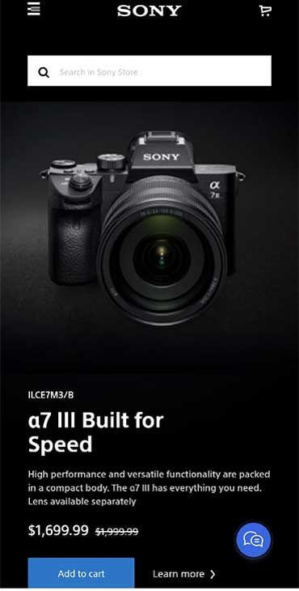
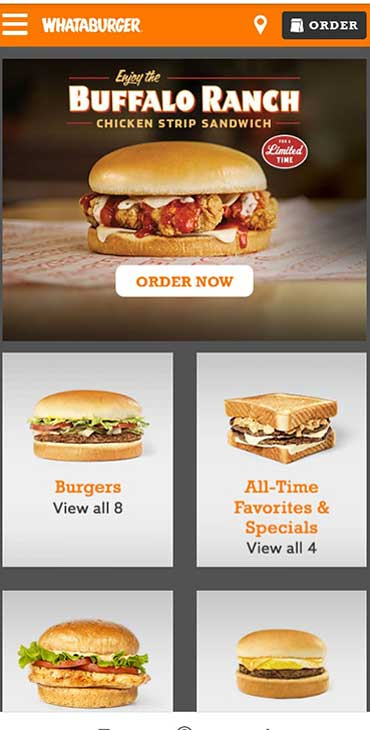

PARC:Alignment
Khan Academy
Khan AcademyAlignment of Slogan, messages and the start button is nicely left aligned and evenly spaced among them in the main page of this site. Even though the main image is on the right site of the page, the site looks effectively clean with the Alignment design Principals are applied.
Hierarchy
Sony USA
Sony USA The mobile view of this Sony website is one of the good examples of Hierarchy design principal. The camera in the middle of the website can spot the featuring product of them and then we can visually identify its name and price because of the variety of font sizing.
PARC : Repetition
Whataburger
Whataburger Whataburger main page provides effective messages of their menus because their menu is shown in two columns. As users scroll down the website, they can be navigated easily to the their burgers and sandwiches because each squares have the same sizes to help identify as similar elements.